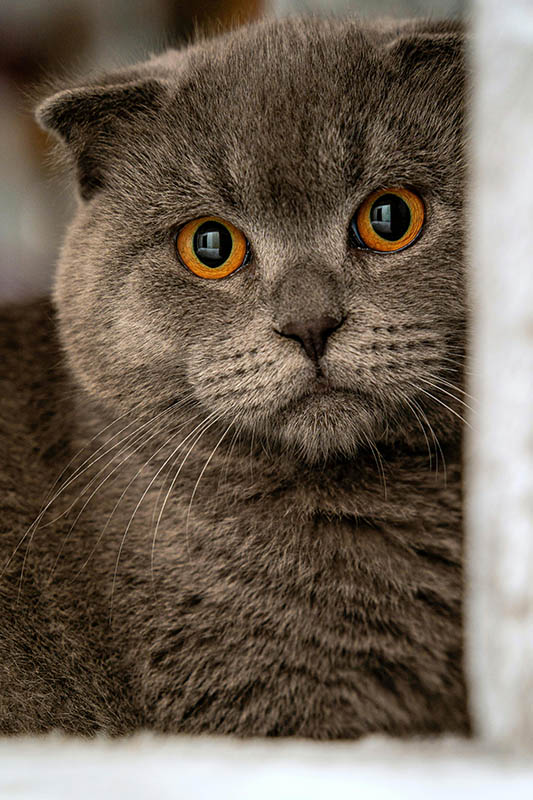
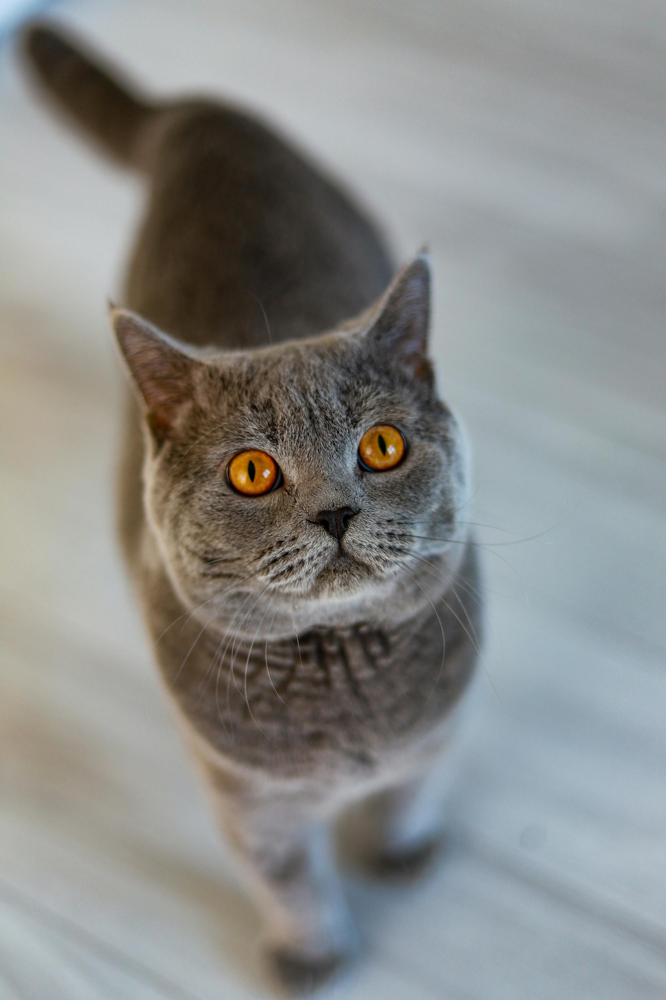
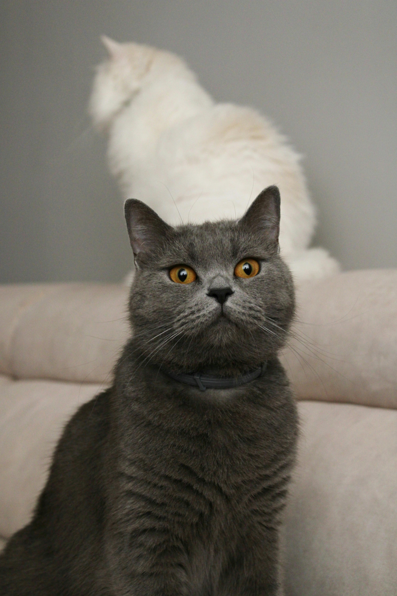
.jpg)
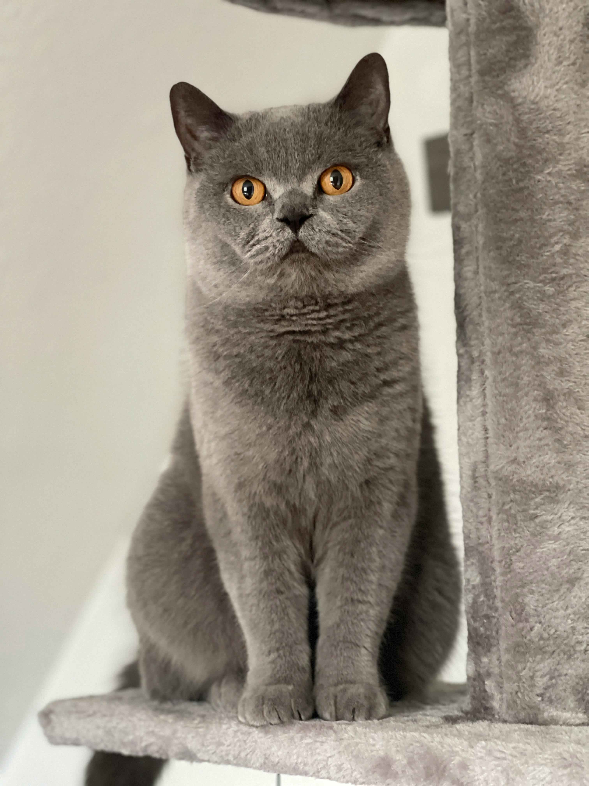
Коти британці — це одні з найзагадковіших і найулюбленіших створінь на планеті. Вони супроводжують людей тисячі років, одночасно залишаючись незалежними і загадковими. На відміну від собак, коти завжди зберігають якусь дистанцію, проявляючи прихильність вибірково, але при цьому їхня присутність здатна приносити тепло і спокій. Коти відомі своїм вишуканим чуттям і здатністю помічати деталі, які залишаються непомітними для людини: тихий шелест листя, рух у темряві, запах, який передає більше інформації, ніж слова.
Історія котів у тісному контакті з людиною сягає Стародавнього Єгипту, де їх вважали священними тваринами. Вважалося, що коти приносять удачу та охороняють будинок від злих духів. Ця аура таємничості збереглася й донині: коти часто асоціюються з магією, загадковістю та самостійністю. Вони не вимагають постійної уваги, але коли вирішують довіряти людині, їхня прихильність стає особливою і цінною.
Коти мають унікальні характери. Одні — ласкаві і товариські, постійно шукають контакт із людиною, інші — більш незалежні, проводять більшу частину часу на самоті, спостерігаючи за світом зі свого улюбленого підвіконня. Вони грайливі, але гра у котів завжди має елемент мисливського інстинкту: стрибки, гонитви за іграшкою чи тінню — це частина їхнього природного поведінкового коду.
Коти також дуже розумні і чутливі. Вони здатні відчувати настрій господаря, розуміти його поведінку та навіть «підлаштовуватися» під режим життя сім’ї. Деякі коти стають справжніми компаньйонами: вони зустрічають господаря після роботи, лягають поруч під час сну або тихо муркотять у моменти спокою, створюючи відчуття домашнього затишку.
Сьогодні коти живуть у всіх куточках світу: у квартирах мегаполісів і в сільській тиші, серед старовинних замків і сучасних хмарочосів. Вони продовжують надихати художників, письменників і фотографів, ставши невід’ємною частиною культури та мистецтва. І хоча коти здаються незалежними та загадковими, у них завжди залишається місце для тих, хто здатний зрозуміти їхній світ і прийняти їхні правила.
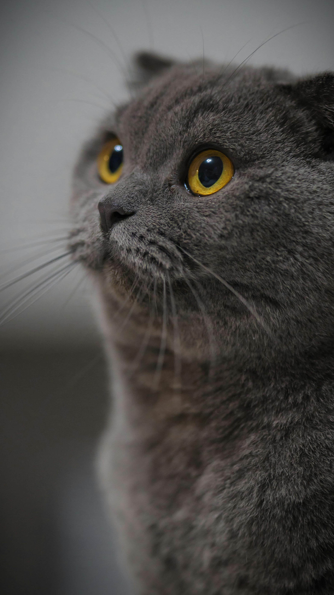
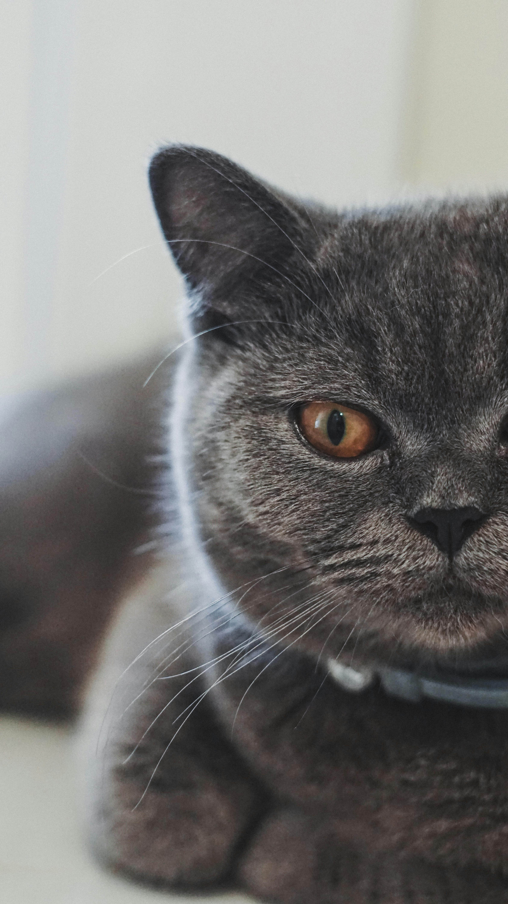
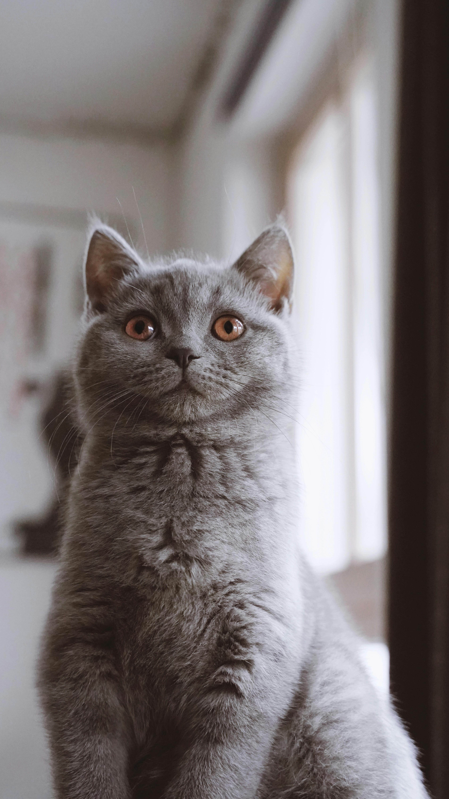
| Процедура | Періодичність | Інструмент / Засіб |
|---|---|---|
| Вичісування | 1-2 рази на тиждень (у линьку — частіше) | Щітка з гумовими зубцями, фурмінатор |
| Купання | Раз на 3–6 місяців | Спеціальний шампунь для короткошерстих котів |
| Стрижка кігтів | 1 раз на 2–3 тижні | 1 раз на 2–3 тижні |
| Чищення вух | 1 раз на місяць | Ватний диск, профілактичний лосьйон для вух |
| Промивання очей | За потреби (при виділеннях) | Кип'ячена вода, фізрозчин, чистий диск |
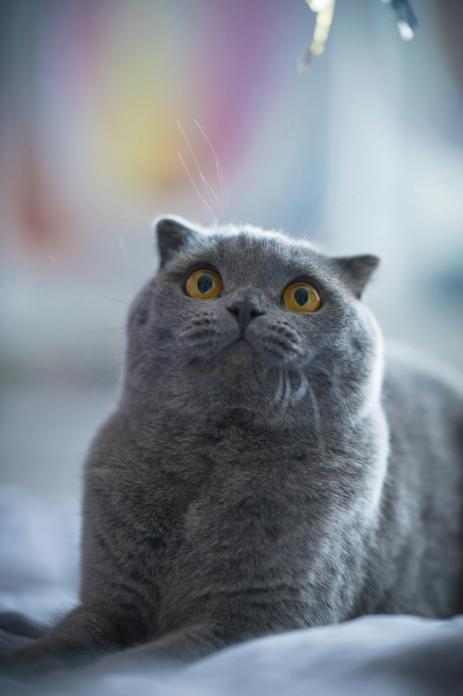
Вони спокійні, не влаштовують безладу в домі та ніколи не нав'язують господареві свою компанію.
Легко залишаються вдома самі, поки ви на роботі. Недарма їх часто називають «котами для бізнесменів».
Унікальний щільний підшерсток робить цих котів надзвичайно м'якими та приємними на дотик.
Це природна, а не штучно виведена порода. Вони мають сильний імунітет та генетичну витривалість.
Британці нявкають вкрай рідко і дуже тихо. Вони подадуть голос лише тоді, коли їм дійсно щось потрібно.
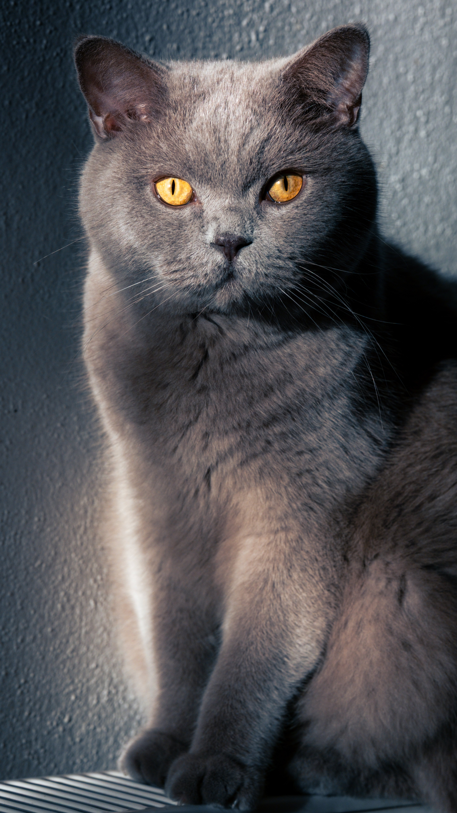
Британська короткошерста кішка — це не просто домашній улюбленець, а справжній символ затишку, спокою й благородства. Коли дивишся на британця, здається, ніби перед тобою маленький плюшевий ведмедик, який випадково навчився муркотіти. Їхня густа шерсть, круглі щоки та великі очі створюють образ кота, якого хочеться обіймати без кінця. Але за милою зовнішністю ховається характер справжнього аристократа.
Британські коти поводяться стримано й гідно. Вони не люблять хаосу та зайвого шуму, рідко влаштовують безлад у квартирі й майже ніколи не нав’язуються. Це ті тварини, які вміють бути поруч саме тоді, коли це потрібно.
Вони можуть тихо сидіти біля господаря під час роботи, засинати неподалік, поки ви читаєте книгу, або мовчки зустрічати вас біля дверей після важкого дня. Їхня присутність діє заспокійливо, ніби в домі з’являється маленький пухнастий охоронець гармонії.
Історія британців бере початок багато століть тому. Вважається, що предки цих котів потрапили до Британії разом із римськими легіонерами. Вони були чудовими мисливцями й охороняли запаси їжі від гризунів. Згодом порода стала настільки популярною, що її почали вважати справжньою національною гордістю Англії. Саме тому британські коти й сьогодні асоціюються з витонченістю, стриманістю та класичним британським стилем. Одна з найвідоміших рис британців — їхня неймовірна шерсть. Вона коротка, але дуже густа та м’яка, через що коти нагадують плюшеві іграшки. Найпопулярніший окрас — блакитно-сірий.
Саме таких котів найчастіше можна побачити в рекламі чи на листівках. Проте британці бувають і кремовими, чорними, білими, шоколадними, рудими, сріблястими та навіть золотистими. Кожен окрас має свій особливий шарм.
Британські коти дуже розумні. Вони швидко звикають до правил у домі, добре запам’ятовують звички людей і навіть можуть хитрувати, якщо хочуть отримати щось смачненьке.



Познайомтеся з пухнастими зірками інтернет-культури та переходьте на їхні офіційні сторінки
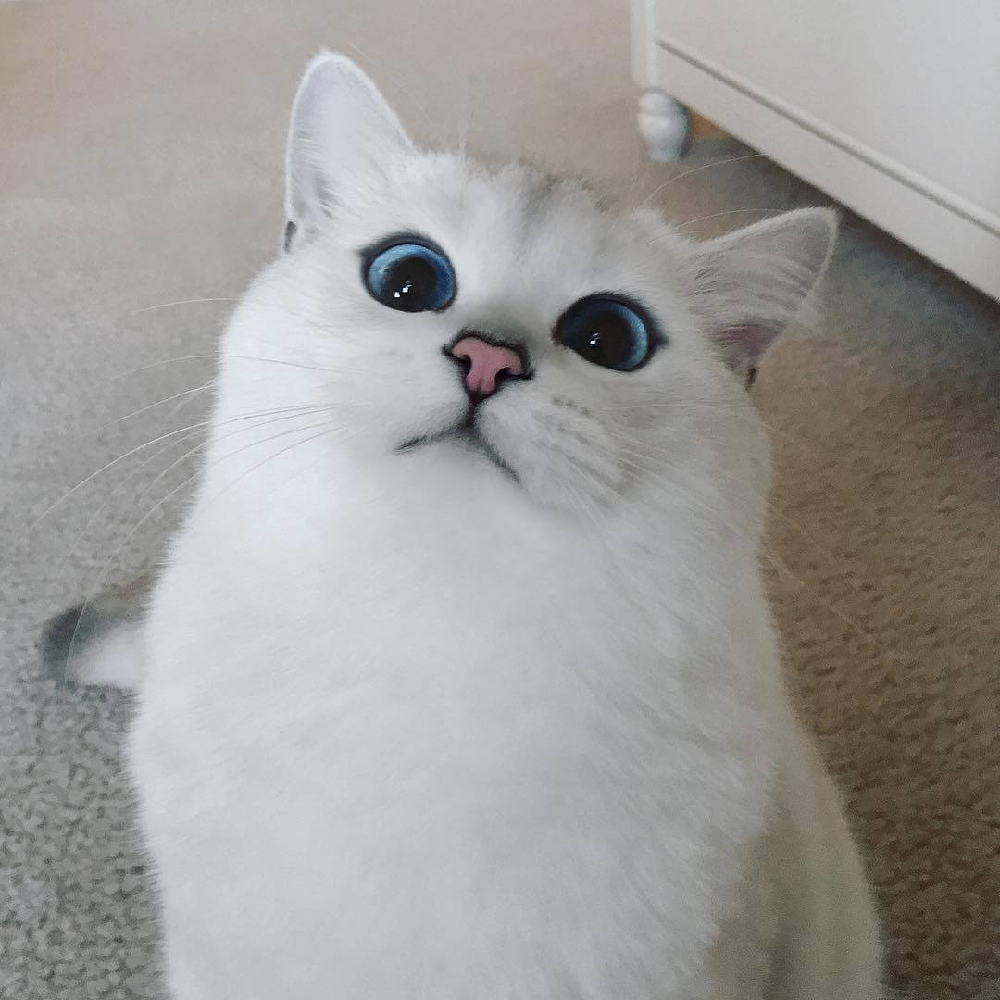
Білосніжний красень із великими блакитними очима та природною «чорною підводкою», який підкорив майже 2 мільйони підписників.
Читати в Instagram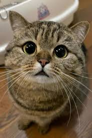
Зірка мемів із Китаю. Його фірмові круглі щоки та «сумний» вираз мордочки регулярно з'являються у стрічках мільйонів користувачів.
Читати в Instagram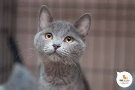
Рекордсмен Книги Гіннеса. Цей британець прославився на весь світ своїм мурчанням, яке за гучністю (67.7 дБ) наздогнало пилосос.
Дивитися відео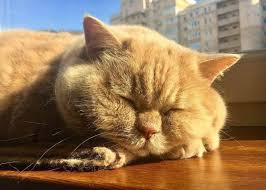
Головний синоптичний кіт України та улюбленець Наталки Діденко. Справжня легенда фейсбуку, яка роками дарувала гарний настрій.
Читати у Facebook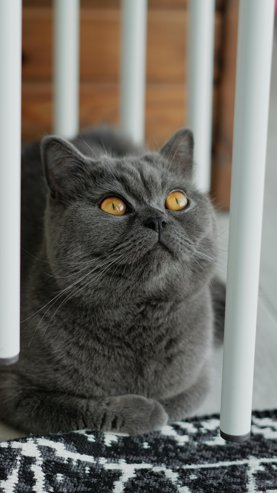
Британська короткошерста — це не просто кішка, а справжній англійський лорд у хутряному пальті. За їхньою іграшковою зовнішністю,круглими щоками та густим плюшевим хутром ховається сильна, незалежна особистість із глибоким почуттям власної гідності.
Цю породу часто називають «котами для бізнесменів», і це ідеально описує їхній менталітет.Самодостатність та повага до кордонівГоловна риса британця — абсолютна незалежність.
Вони чудово переносять самотність і не страждатимуть від туги, поки ви перебуваєте на роботі. Британець завжди знайде чим зайнятися: перевірить підвіконня, поспатрає іграшкову мишу або просто проспатиме більшу частину дня.Ці коти гостро потребують особистого простору.
Вони не нав'язливі й не будуть ходити за вами, вимагаючи уваги. Ба більше, британці терпіти не можуть, коли їх тискають силою або тримають на руках проти їхньої волі. Якщо ви спробуєте взяти його, як немовля, кіт, скоріш за все, викрутиться і піде геть. Вони поважають ваші межі й вимагають такого ж ставлення до себе.Як британці проявляють любовНезважаючи на зовнішню холодність, британські коти щиро прив'язуються до своєї родини, хоча й обирають одного «головного» господаря. Їхня любов аристократична й стримана. Вони не схильні голосно нявкати чи лізти в обличчя.
Британець продемонструє свою прихильність тихо: він прийде в кімнату, де ви сидите, сяде поруч на безпечній відстані й буде тримати вас у полі зору. Вищим проявом довіри є момент, коли кіт лягає на спину, підставляючи масивний животик, або легенько бодає вас головою.Еволюція характеру: від розбишаки до філософаКупуючи британське кошеня, важливо розуміти, що його характер формується роками.
До року — це непосидючий, енергійний клубочок, який досліджує світ і може влаштовувати нічні перегони. З віком активність згасає. Повного розквіту сил і фірмового спокою порода досягає лише до 3–5 років. Дорослий британець — це флегматичний філософ, який випромінює спокій, майже не реагує на дрібні подразники та більшу частину часу поводиться як велична жива статуя.Правила спілкування: чого не пробачить британецьЧерез високий інтелект та гордість, ці коти мають чутливу нервову систему. На них категорично не можна кричати чи застосовувати фізичні покарання.
Якщо образити британця, він не буде мститися чи псувати взуття, але він може назавжди замкнутися в собі й просто викреслити вас зі списку друзів, ігноруючи будь-які спроби примирення.Британська короткошерста стане ідеальним компаньйоном для спокійних, зайнятих людей, які цінують у тваринах тишу, охайність та ненав'язливу, але вірну дружбу.